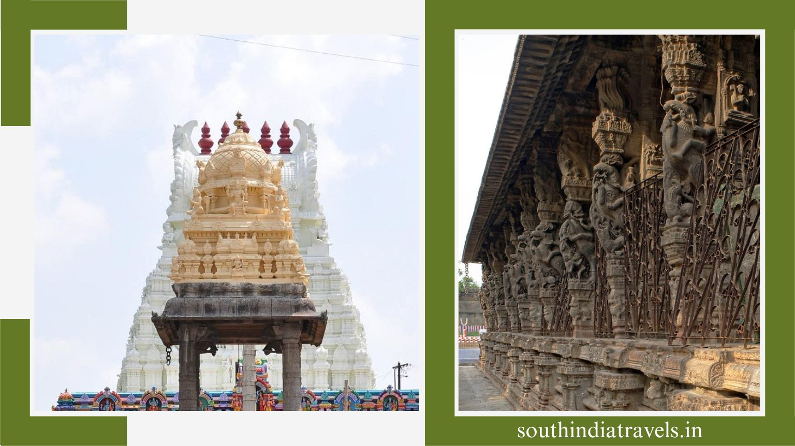

About Kozhikode
Kozhikode - City Of Spices
Kozhikode is a beautiful coastal town on the Malabar coast of India, in the state of Kerala. Also known as Calicut, the town is a pristine haven in nature, filled with lush greenery, tranquil beaches, and historical forts. It is known for having one of the most beautiful backwaters in Kerala and serves as a charming weekend getaway for the locals and nearby travellers. And for beach lovers, the clean and untouched beaches of the city are truly irresistible. If you are in the mood to take a break from your busy lifestyle and enjoy the serene calmness of nature, then Kozhikode is the place for you. From stunning waterfalls to religious places, pristine beaches, and natural beauty all around, Kozhikode is surely one place you wouldn’t want to miss on your Kerala tour package. It is a peaceful city, with the vast Arabian Sea on the west and the peaks of Wayanad Hill on the east. If history is to be believed, Vasco-da-Gama first set foot in India at Kozhikode when the Spice Route was established. This is the reason Kozhikode, or Calicut, was earlier known by yet another name, the City of Spices. The city also served as a mighty seaport in the world, where traders from Arabia, China, and Africa once converged. With such a rich history, it should come as no surprise that there is an abundance of things to do in Calicut, as well as some of the best places to visit in Kerala.
Popular Place To Visit In Kozhikode
CALICUT PLANETARIUM
One of the most famous places in Kozhikode is the city’s planetarium, which conducts nearly 1200 shows every year. It can accommodate up to 250 guests at one time and take them through the mysteries of the universe, experiencing stargazing at its best. The Regional Science Center has outdoor science displays as well. The section called Giants of Nature is a huge aquarium, which is a popular attraction here.
KOZHIKODE BEACH
Kozhikode Beach is one of the most popular tourist attractions in Kozhikode. This beautiful beach attracts thousands of tourists and locals every day, owing to the beautiful sunset views it has to offer. The old lighthouse, along with the two crumbling piers that run into the sea, adds to the beauty of the beach and retains its old-world charm. With the stunning views, soothing sounds of the sea waves, and crisp air on your face, there isn’t a better way to spend one’s evening, for sure. Take a stroll at this famous tourist spot in Kozhikode, watch the sun setting into the ocean in the distance, and if you are lucky, you can also spot dolphins during the morning hours.
BEYPORE
Beypore is one of the best places in Kozhikode to visit if you are someone who has a great interest in learning about the rich history of the place. Beypore is a small port located near Kozhikode and was historically famous for trading with the Middle East. One of the oldest ports in Kerala, Beypore has been a strategically important site since the time Arabs, Chinese, and Europeans invaded Kerala. There is also a 15, 000-year-old shipping yard here, which showcases the exceptional craftsmanship of the workers.
IRINGA CRAFTS VILLAGE
Amongst the prime tourist places in Kozhikode is the Iringa Crafts Village, where artisans and craftsmen are encouraged to show their skills and sell their products to visiting tourists. You can also learn more about Kerala’s art and craft through the several workshops available here and pick up a new skill while on the holidays.
MANANCHIRA
Mananchira is another popular tourist spot in Kozhikode that has held many football matches in the past. This beautiful park is covered with lawns, traditional buildings, a musical fountain, and an open-air theater and is built around a man-made lake known as Mananchira Lake. The area’s royal family’s primary water source, Mananchira or Mana Vikraman Tank, is still in pristine condition today and offers a peaceful location for an evening stroll or to enjoy a picnic with families and friends.
THIKKODI LIGHTHOUSE
Among the top tourist places in Kozhikode is the Thikkodi lighthouse, which is said to have been constructed on the remains of a shipwreck. It is located on the rocky shoreline and offers scenic views of the sea and several species of nomadic birds. With prior permission, tourists can also climb up the stairs of the lighthouse to reach the top and enjoy the awesome views.

BACKWATERS OF KOZHIKODE
Pretty likely at the top of the list while visiting Kozhikode tourist places is exploring the quiet backwaters and the natural beauty that surrounds it. There are palm trees dotted all along the water banks, which seem ever so peaceful, and the canal and lakes offer the guests the perfect spot to enjoy houseboat cruising. There are luxury floating villas, highly popular among the newlyweds, that you choose to stay in for an absolutely pampering experience as they offer a perfect getaway in the picturesque surroundings. The peaceful surroundings and tranquility all around will soothe your spirits and leave you wanting for more.
VALAYANAD DEVI TEMPLE
Another one of the tourist places in Kozhikode, the Valayanad Devi Temple, is a 14th-century marvel that features Dravidian architecture that does not reflect the style of any other temple in the area. It was built by the Zamorins and is an important holy place in the city. Idols of Shiva, Lord Ayyappa, and Vighneswara are also worshipped in this temple. Kuruthy Tarpanam is one of the important festivals conducted here.


KADALUNDI BIRD SANCTUARY
A great way to spend time in Calicut is by visiting the famous Kadalundi Bird Sanctuary. It attracts both professional photographers and nature enthusiasts, apart from the usual tourists, because of its picturesque location while offering a great view of both the Arabian Sea and the Kadalundi River. Considered among the top Calicut tourist places, the sanctuary is home to both local bird species as well as migratory birds, offering mesmerising views. There are also deep-water crocodiles to increase excitement levels and optional boat rides to enjoy the scenery.
THUSHARAGIRI FALL
While visiting hill stations near Kozhikode, make sure that you take a break at the breathtaking Thusharagiri Falls. Two streams originate from the Western Ghats and meet at this point to create the Chalipuzzha River. The river further creates three waterfalls, and the free-falling water, as stunning to watch as exciting to feel, makes for one of the best places to visit near Kozhikode. There are also plenty of activities you can take part in, such as trekking, rock climbing, or simply exploring the lush green forest around you.
KAKKAYAM DAM
Kakkayam Dam is a famous picnic spot and is popular among the tourist places in Kozhikode. It is known for its scenic beauty and tranquil surroundings, which make you leave behind all the stress and simply get lost in the calmness. Though the dam is small in size, it more than compensates with the small waterfalls around it. There are a few options for outdoor activities here, such as exploring the local flora and fauna, taking a boat ride, hiking through the dense forests, and more. There is also a hanging bridge on the waterfall, which is a popular tourist attraction. It is surely a great place to visit in Kozhikode and spend some quality time with your family.
MOTHER OF GOD CATHEDRAL
If you want to experience the rich culture of the city, you can visit the Mother of God Cathedral, which is located at a distance of just 1.5 kilometres from the Calicut Railway Station. Counted among the best tourist places in Kozhikode for a one-day trip, the Mother of God Cathedral houses a famous and ancient portrait of Mother Mary, which is said to be more than 200 years old. It portrays Roman architecture and is said to have been built around 1513 AD by the Portuguese. In 1724, the church was renovated, where stones and mortar were used to add durability.